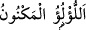

kelimesinin çoğuludur. “Velid” ise doğumu üzerinden çok zaman geçmiş bulunmayan
çocuk, genç demektir. Bu gençlerin ebediyen tazelikleri ve güzellikleri değişmez.
“Ölümsüz” şeklinde tercüme edilen “muhalledûn” kelimesi ya “küpe” anlamında
“huld” kökünden türemiştir. Ya da et-Tac’da ifâde edildiği üzere “haled” kökünden
türemiştir. Haled; ruh demektir. Eğer bu son kökten türediğini kabul edersek âyetin
mânâsı; “etraflarında cisimleri olmayan rûhânî gençler dolaşır” şeklinde olur.
Ey görme kabiliyeti olan kişi! “Sen onları gördüğün zaman” güzelliklerinden,
renklerinin saflığından, yüzlerinin parlaklığından, hizmet meclisinde çeşitli hizmetlerle
oraya buraya, dağıldıklarından, hizmete koşarak cennetliklerin etraflarında
koştuklarından dolayı onları “etrafa saçılıp dağılmış” parlak “inciler sanırsın.”
“İnci” anlamına gelen “lü’lü’” kelimesinin çoğulu, “leâli” şeklinde gelir. Kelimenin
kök yapısında “parlaklık” anlamı vardır. Bu kökten “tele’lee’ş-şey’u” ifâdesi, “herhangi
bir şey pırıl pırıl parladı” demektir. İşte bu gençler, ebrâr’a hizmet ederlerken saçılmış
incilere benziyorlar. Eğer bunlar, bir sıraya dizilip saf tutsalar herhangi bir ipe dizilmiş
inciye benzerler. Ancak inci, sağa sola dağılmış hâlde iken ipe dizilmiş hâlinden daha
güzel görünür. Çünkü dağılma hâlinde tanelerdeki beyazlık ve parlaklıktan dolayı
bâzılarının ışığı diğerinin üzerine düşer. Dolayısıyla dağınık hâlde bulunan incilerin
manzarası, ipe dizilmiş incilerin görünümünden daha farklı, daha güzel ve cezbedici
olur.
Bâzı âlimlerin kanaâtine göre, bu dağılmış gençler cennetin çeşitli yerlerine dağılmış
vaziyettedirler. Âyeti bu şekilde anlamak, onları “hizmet meclisine dağılmış” olmakla
kayıtlamaktan daha güzeldir.
Buna karşılık cennetteki hûriler “/gizlenmiş inci”ye benzetilmişlerdir.
Çünkü onlar, hizmet eden gençler gibi etrafa yayılmazlar. Bilakis onlar, –âyet-i
kerîmenin deyimiyle-; “odalar içinde sâhiplerine tahsis edilmiş hurilerdir.” (er-
Rahman, 55/72)
Aynu’l-maâni’de deniyor ki: Bu âyet-i kerîmeden anlaşılan şudur: Bahsedilen
hizmetçi gençlerin dış görünüşlerine bakmak sûretiyle onlardan yararlanılacaktır.
Bembeyaz deve kuşu yumurtalarına benzeyen hûriler ise böyle değildir. Bu hizmetçi
gençler, yenilen yiyeceklerin ve içilen içeceklerin lezzet ortamına beyaz renkleri ve
parlaklıkları ile ayrı bir güzellik katmaktadırlar. Bu açıklamalardan anlaşılıyor ki,
cennette erkek erkeğe cinsel ilişki olmayacaktır. Bâzı kimselerin bunun olabileceği
yolundaki görüşleri -kitabımızın çeşitli yerlerinde defalarca değindiğimiz ve
açıkladığımız üzere- temelsiz ve reddedilmiş bir görüştür.
Bâzı âlimlere göre bu âyet-i kerîmenin mânâsı şöyledir: “Etraflarında ölümsüz
gençler dolaşır. Sen onları gördüğün zaman ipinden ayrılmış ve yerdeki örtü üzerine
dağılmış birer inci zannedersin.”
Rivâyete göre Me’mun, Hasan b. Sehl’in kızı Buran’la evlenip zifafa girdiği gece
arap şâirlerinden Ebû Nuvas’ın bir beytini hatırlar. Ona bu beyti hatırlatan manzara,